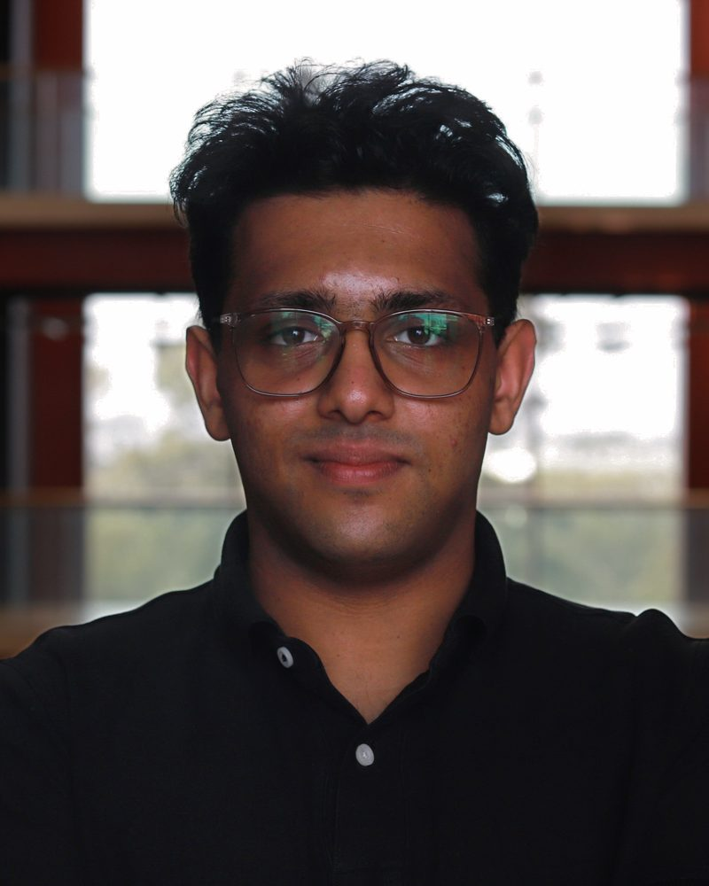
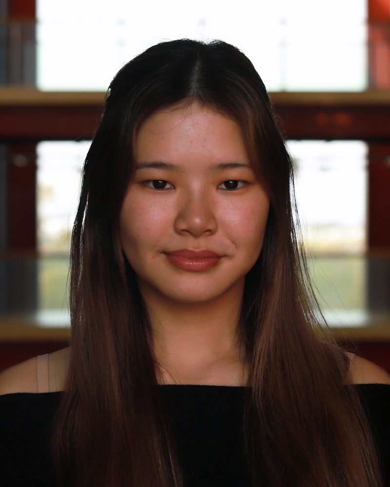
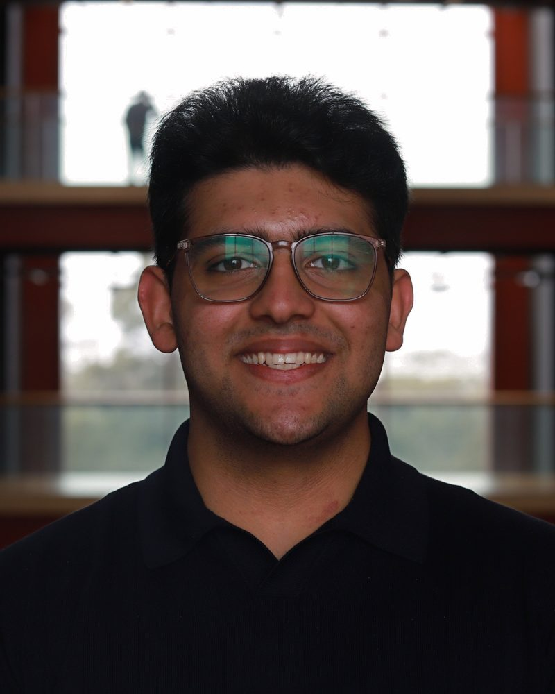
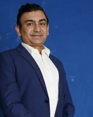
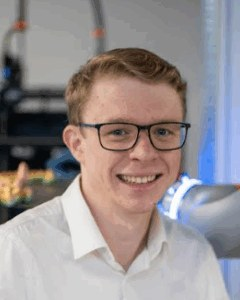

Executives
-
Campbell Gregor
Chief Executive Officer
LINKEDIN ↗Campbell is a fifth and final year student studying a double degree in Mechatronics and Robotics Engineering and Finance. He founded Monash VISTA with the current executive team while developing their Exoskeleton for Active Posture Correction final year project.
Campbell is especially passionate about robotics and intelligent systems. Outside of academics he enjoys weight lifting, hiking and running.
-

Kush Berry
Chief Technical Officer
LINKEDIN ↗Kush is in his fourth and final year of Robotics and Mechatronics Engineering. He is a part of the Monash VISTA founding team. He is passionate about building intelligent robots that can think, adapt, and act on their own. Kush loves to bring hardware, software, and AI together to turn futuristic ideas into something real.
In his free time Kush enjoys go-karting, cycling, gaming and badminton (or any racket sports).
-

Julewen Rany
Co-Chief Technical Officer
LINKEDIN ↗[bio to come, 2–3 sentences]
[personal line]
-

Krish Berry
Chief Operations Officer
LINKEDIN ↗Krish is studying his final year of Mechatronics and Robotics Engineering. He is a part of the Monash VISTA founding team. Krish is passionate about robotics and vehicles (especially the fast ones), as well as designing and developing innovative engineering projects.
In his spare time, Krish enjoys online gaming, cycling, the gym, learning languages, and go-karting.
-
Samuel Loo
Chief Financial Officer
LINKEDIN ↗[bio to come, 2–3 sentences]
[personal line]
- NOW RECRUITING This could be you Join the team
Supervisors & Advisors
-

Usman Sarwar
SUPERVISOR
Solution Architect and R&D Project Manager, Monash Innovation Labs
LINKEDIN ↗Usman Sarwar is an R&D project manager and leads solution architecture and innovation delivery at Monash Innovation Labs / Smart Infrastructure Lab, Faculty of Engineering, Monash University.
Usman Sarwar has over 25 years experience across software architecture, systems engineering, and R&D – spanning Intel, Altera, government, and academia (Monash Innovation Labs). At Intel Usman had the roles of a Sensor Software Systems Architect and Validation Architect, where he was responsible for developing and validating the next generation compute technology for Edge Computing, Cloud and 5G. At Altera he was an Engineering Lead, Solution and Validation Architect, where he combined solution architecture, technical leadership, embedded Linux, ARM HPS, FPGA platforms, industrial networking, validation, GenAI, and industry-academic collaboration.
With expertise in solution architecture, R&D management, AI, IoT, Digital Twins, edge/cloud systems, and data engineering platforms, Usman Sarwar focuses on turning complex industry challenges into practical architectures, demonstrable systems, scalable platforms and long-term technology roadmaps.
-
Professor Hai L. Vu
SUPERVISOR
Deputy Dean (Research), Faculty of Engineering
LINKEDIN ↗Professor Hai L. Vu is the Deputy Dean (Research) in the Faculty of Engineering at Monash University and the recipient of the Australian Research Council (ARC) Future Fellow Award (2012–2016) in the area of Intelligent Transport Systems (ITS). He is a Professor of Intelligent Transport and leads the research in Intelligent Transport at the Civil Department in the Faculty of Engineering, Monash University.
Prior to joining Monash University in 2016, he spent 5 years at the University of Melbourne and 11 years at Swinburne University of Technology where he established and led the Intelligent Transport Systems Lab in joint partnership with VicRoads. He has over 25 years experience as an academic and researcher.
Professor Hai L. Vu conducts research in modelling and performance evaluation of large-scale complex networks and specialises in stochastic modelling and optimisation, applied probability, IoT, smart infrastructure, data mining and analysis, communications and networking.
-

Matthew Willaton
ADVISOR
Research Support Officer at Monash Innovation Labs
LINKEDIN ↗Matthew Willaton is employed at the Faculty of Engineering as the Lab Manager for the Monash Smart Infrastructure Lab. He pursues and supports research in Computer Vision, Digital Twins and AI for industry partners, PhD, Masters, and undergraduate students.
Alongside advising Monash VISTA, Matthew advises MCAV and assists with supervising students’ final year projects.
Matthew graduated from Monash University with a double degree in Mechatronics & Robotics Engineering and Commerce, majoring in Business Analytics. For his final year project, he designed and developed a Digital Twin to monitor the position and trajectory of humans in a physical environment.
In his free time, Matthew enjoys volleyball, bouldering and hiking.
As a member of Monash VISTA, you will have the opportunity to gain valuable hands-on experience working with technologies highly relevant to industry. All we ask for is your passion and enthusiasm!
Join the team